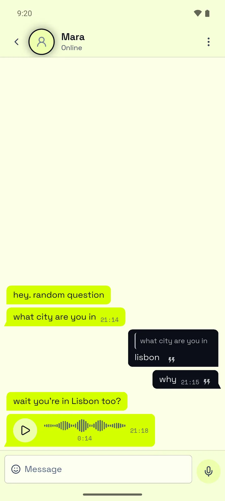

Diz quem gostavas de conhecer
Escolhe as idades, os sexos, as línguas e a região que te interessam. Essas mesmas escolhas decidem quem te pode encontrar.
Conversas com desconhecidos para adultos · Android
O YapRoll poupa-te a folhear perfis e a deslizar. Junta-te à primeira pessoa em linha que corresponde ao que procuras, e esse par torna-se uma conversa que dura enquanto houver vontade de a continuar.


Como funciona
Escolhe as idades, os sexos, as línguas e a região que te interessam. Essas mesmas escolhas decidem quem te pode encontrar.
O YapRoll junta-te à primeira pessoa que corresponde e tem a app aberta nesse momento. Calha-te uma só pessoa, logo ali, e podes dizer olá antes de pensares demasiado nisso.
O par aparece nas tuas Conversas. Podes escrever ou enviar notas de voz e GIFs, e vês quando cada mensagem é entregue e lida. E se não estiver a dar em nada, toca em Eliminar para ambos e desaparece dos dois telemóveis.
Porquê o YapRoll
Aqui não há um catálogo de perfis nem forma de procurar alguém. No YapRoll só conheces alguém quando a app vos junta, por isso as únicas pessoas que veem o teu perfil são aquelas com quem já estás a falar. Achamos que é assim que deve ser.
Segurança
Indicas a tua data de nascimento ao criar conta, e a app não cria contas para menores de 18 anos. Mais ninguém a vê.
Cada foto de perfil passa por uma verificação automática antes de mais alguém a poder ver. Se a verificação tiver dúvidas, um moderador analisa-a, e uma foto que viole as regras é removida de imediato.
As duas opções estão no menu de cada conversa. Quando bloqueias alguém, essa pessoa deixa de te poder contactar, e nada lhe diz que o fizeste.
Quando denuncias alguém, um moderador analisa a denúncia em 24 horas, com as últimas 20 mensagens dessa conversa tal como estavam quando a enviaste. Se agirmos sobre uma conta, o titular vê o que fizemos e porquê em Avisos da conta.
Sem anúncios
A versão gratuita mostra um banner e, de vez em quando, um anúncio de ecrã inteiro. Uma subscrição remove os dois, e ainda deixa a tua conta de fora da limpeza de contas inativas ao fim de 90 dias. Podes pagar ao mês ou ao ano através do Google Play, que te mostra o preço antes de comprares.
O Google Play trata da cobrança, por isso podes mudar ou cancelar na página de subscrições do Play, ou tocar em Gerir subscrição nas Definições da app.